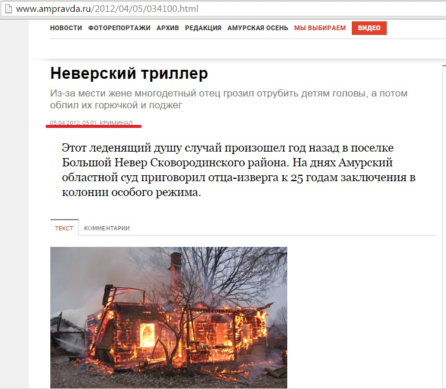
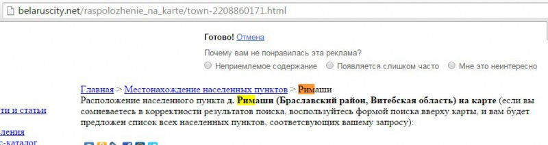

О. Бондаренко: Как ICTV раззомбирует украинцев ложью
Телеканал ICTV в своей программе под названием «Антизомби» не покидает попыток рассказать украинцам всю правду. В сюжете под названием «Тотальная ложь России о пожарах в Забайкалье» диктор возмущается тем, что центральные телеканалы РФ говорят не о пожарах в Забайкалье, а о ситуации в Украине.
Не станем акцентировать внимание на том, что, в свою очередь, украинский телеканал зачем-то постоянно рассказывает о проблемах не в нашей стране, а в чужой. Не это главное. Главное — как раззомбирует своих зрителей ICTV.
«Огонь вплотную подходит к Чите и другим крупным городам. Фотографии с места событий заставляют содрогнуться», — говорит диктор ICTV.
Вот фотографии.
«И кажется, горе таких масштабов заставит каналы пропаганды хотя бы на время обратить внимание на саму Россию. Но тест на свою порядочность они снова провалили» — резюмирует ведущий ICTV.
Понятия не имею, какой тест провалили российские журналисты, зато знаю, что о порядочности сотрудников ICTV и речи не идет.
Вот, например, шокирующая фотография в эфире украинского телеканала. Якобы с Забайкалья.
На самом деле ее можно найти в новостях за 2013 год.

Еще в статье об отце, который сжег своих детей.

Однако, похоже, первоисточник — это материал под названием «Пожары: в Друе сгорел бар, а в Римашах — дом».
Подпись под фотографией «Сгоревший дом в Римашах». Инцидент прозиошел в 2011 году.
Кстати, если вы, как и я, не знали, где находятся Римаши, то подскажу. В Беларуси.

А вот другая фотография «из Забакайлья», от которой можно содрогнуться, по словам диктора украинского телеканала.
На самом деле этот снимок сделан в селе Сосновка Кемеровской области. В 2012 там сгорел чей-то дом.
Правильный сюжет ICTV под названием «Тотальная ложь России о пожарах в Забайкалье». Хорошо, что в Украине так не лгут.